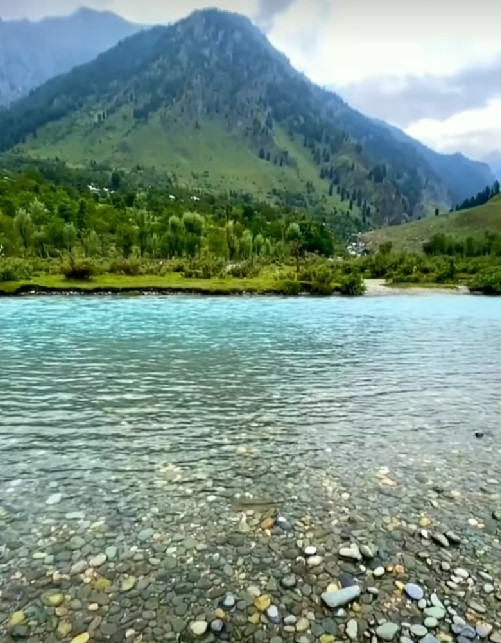
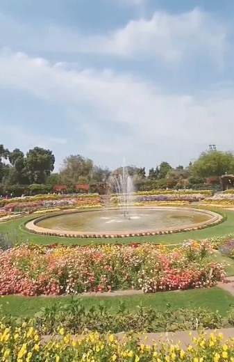
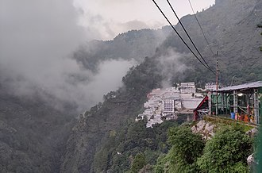

Jammu And Kahmir, the "Paradise on Earth".
This is a place where nature is filled with beauty, and is a must visit place for everyone.
Betaab Valley

Betaab Valley, located in Jammu and Kashmir, is a picturesque destination known for its stunning natural beauty, lush meadows, and crystal-clear waterways, often featured in Bollywood movies.
Shalimar Bagh Mughal Garden

Shalimar Bagh is a Mughal garden in Jammu and Kashmir, renowned for its tiered layout, flowing waterways, and lush flora, showcasing the Mughal dynasty's artistic garden craftsmanship.
Vaishno Devi

Vaishno Devi, located in Jammu and Kashmir, is a revered Hindu pilgrimage site attracting millions of devotees yearly due to its spiritual significance and breathtaking mountainous surroundings.